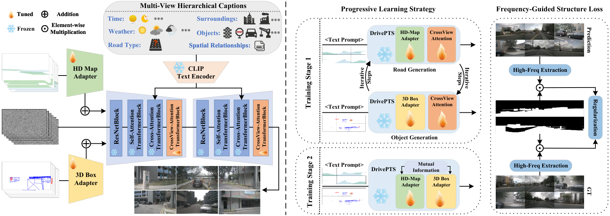
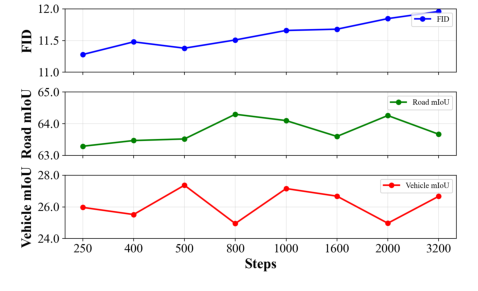
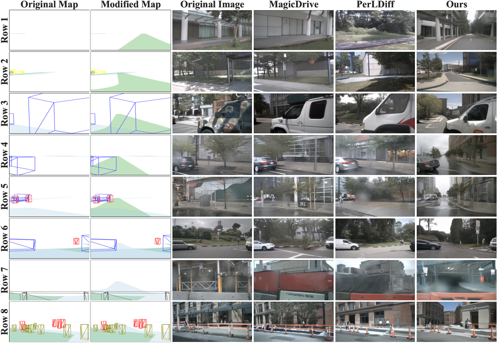
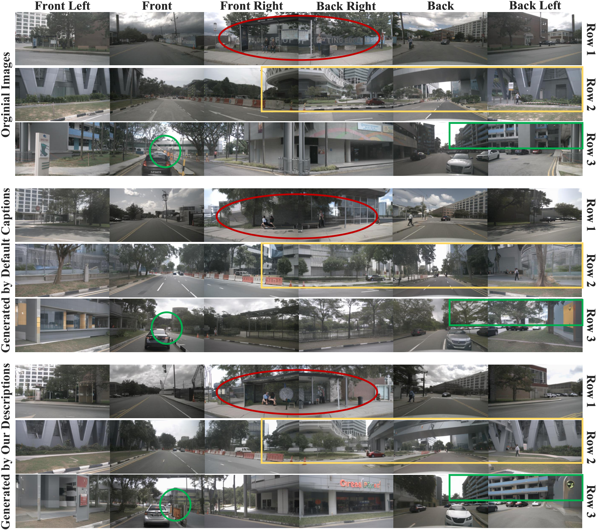
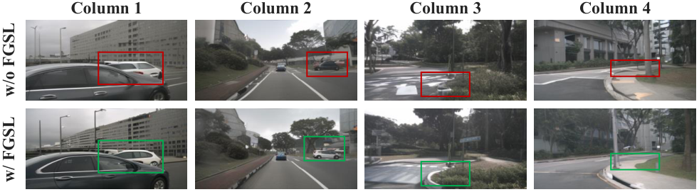

DrivePTS
简单摘要
不同驾驶场景的合成是验证自动驾驶系统的鲁棒性和通用性的关键数据增强技术。当前的方法将高清 (HD) 地图和 3D 边界框聚合为扩散模型中的几何条件，以生成条件场景。然而，当控制条件独立变化时，隐式条件间依赖性会导致生成失败。此外，这些方法在语义和结构方面都存在细节不足的问题。具体来说，简短且视图不变的字幕限制了语义上下文，导致背景建模较弱。同时，具有均匀空间权重的标准去噪损失忽略了前景结构细节，导致视觉扭曲和模糊。
为了应对这些挑战，我们提出了 DrivePTS，它包含三项关键创新。首先，我们的框架采用渐进式学习策略来减轻几何条件之间的相互依赖性，并通过明确的互信息约束得到加强。其次，利用视觉语言模型生成跨六个语义方面的多视图分层描述，提供细粒度的文本指导。第三，引入频率引导结构损失来增强模型对高频元素的敏感性，提高前景结构保真度。大量实验表明，我们的 DrivePTS 在生成多样化驾驶场景方面实现了最先进的保真度和可控性。
值得注意的是，DrivePTS 成功生成了先前方法失败的罕见场景，凸显了其强大的泛化能力。


简而言之，这篇论文关注的核心是：不同驾驶场景的合成是验证自动驾驶系统的鲁棒性和通用性的关键数据增强技术。当前的方法将高清 (HD) 地图和 3D 边界框聚合为扩散模型中的几何条件，以生成条件场景。然而，当控制条件独立变化时，隐式条件间依赖性会导致生成失败。此外，这些方法在语义和结构方面都存在细节不足的问题。具体来说，简短且视图不…
自动驾驶技术在感知任务方面取得了重大进展，例如3D多目标跟踪（MOT）和在线本地地图（OLM）。此外，基于视觉语言动作（VLA）的自主系统表现出强大的潜力。然而，没有高精度地图的通用副驾驶系统在导航方面表现出明显的缺陷，特别是在复杂交通场景下的道路选择和路径规划方面。阻碍导航能力的一个关键瓶颈是难以收集全面的道路配置。获取特定的流量场景既耗时又耗费资源，并且通常受到地理和监管的限制。为了解决数据稀缺问题，最近的研究利用扩散模型来合成多样化、可控的交通场景。
BEVControl、MagicDrive 等技术集成了不同的条件输入，包括文本描述、摄像机参数和 3D 空间信息，以生成遵循这些可控元素的交通场景。这些方法展示了生成用于数据增强的不同驾驶场景以及在模拟验证期间构建具有挑战性的场景的潜力。尽管取得了这些进步，现有方法仍表现出显着的局限性：1）几何条件之间的相互依赖性。当联合学习 3D 边界框和地图时，当前的方法可能会过度拟合道路结构和交通对象之间的共现模式。
如图所示，生成器可能会隐式地将一排停放的汽车与笔直的道路相关联，或者将路障与不存在的道路相匹配，即使修改地图条件也无法产生相应的变化。 2）文本指导薄弱。现有方法依赖于简短的、视图不变的文本描述，仅包含基本信息，无法捕获高保真生成所需的细粒度和特定于视点的环境细节。这些粗粒度的标题会导致背景建模较弱，我们的实证研究中更高的 Fréchet 起始距离 (FID) 分数和定性视觉评估就证明了这一点。 3）缺乏前景细节。
此外，现有方法优先考虑全局场景生成，在计算去噪损失时平等对待所有区域，同时忽略前景细节。这会导致生成的物体和道路出现结构扭曲和模糊。为了应对这些挑战，我们提出了 DrivePTS，这是一种具有文本和结构的渐进式学习框架……
核心创新
综合引言与方法部分，这篇论文的核心创新可以概括为以下几方面：
1）问题定义与研究动机
自动驾驶技术在感知任务方面取得了重大进展，例如3D多目标跟踪（MOT）和在线本地地图（OLM）。此外，基于视觉语言动作（VLA）的自主系统表现出强大的潜力。然而，没有高精度地图的通用副驾驶系统在导航方面表现出明显的缺陷，特别是在复杂交通场景下的道路选择和路径规划方面。阻碍导航能力的一个关键瓶颈是难以收集全面的道路配置。获取特定的流量场景既耗时又耗费资源，并且通常受到地理和监管的限制。为了解决数据稀缺问题，最近的研究利用扩散模型来合成多样化、可控的交通场景。 BEVControl、MagicDrive 等技术集成了不同的条件输入，包括文本描述、摄像机参数和 3D 空间信息，以生成遵循这些可控元素的交通场景。这些方法展示了生成用于数据增强的不同驾驶场景以及在模拟验证期间构建具有挑战性的场景的潜力。尽管取得了这些进步，现有方法仍表现出显着的局限性：1）几何条件之间的相互依赖性。当联合学习 3D 边界框和地图时，当前的方法可能会过度拟合道路结构和交通对象之间的共现模式。如图所示，生成器可能会隐式地将一排停放的汽车与笔直的道路相关联，或者将路障与不存在的道路相匹配，即使修改地图条件也无法产生相…
2）方法框架与核心模块
在本节中，我们首先提供稳定扩散去噪过程和用于几何条件的 T2I-Adapter 架构的初步背景。然后，我们提出了我们的 DrivePTS 框架，如图所示，包括：1）渐进式学习策略，以减轻几何条件之间的相互依赖性，2）VLM 驱动的多视图分层场景描述生成，以丰富文本指导，3）频率引导结构损失，以改善结构细节，以及 4）统一这些组件的总体训练目标。初步稳定扩散。我们基于稳定扩散（SD）实现我们的方法，这是一种文本到图像的 LDM，通过 UNet 降噪器在潜在空间中执行降噪。训练目标表述为： 其中 表示时间步 处的噪声潜在特征。表示条件信息，是UNet降噪器函数。在推理过程中，潜伏通过以 和 为条件逐渐去噪。最后，自动编码器的解码器将去噪后的潜在图像转换为图像。 T2I 适配器。以前的方法通常通过 ControlNet 合并各种条件，其中涉及复杂的分支结构。由于我们的框架被设计为分别处理两个几何条件，因此利用并行组成的 ControlNet 将显着增加计算成本。因此我们采用了轻量级的T2I-Adapter。具体来说，我们将几何条件视为图像输入并将其输入相应的适配器，提取多尺度特征并直接注入…
3）实验设计与工程价值
设置数据集。我们在 nuScenes 数据集上评估我们的方法，该数据集包含由 6 个摄像机捕获的 1,000 个 360° 街景场景的示例。按照官方配置，我们使用 700 个场景（28,130 帧）进行训练，使用 150 个场景（6,019 帧）进行验证。对于对象，我们重点关注十个类别：汽车、公共汽车、卡车、拖车、摩托车、自行车、工程车辆、行人、障碍物和交通锥。每个类别都由不同颜色的边界框表示，这些边界框用作框适配器的输入。关于地图，我们专注于三种主要类型：驾驶区、车道和人行横道。这些布局也由地图适配器进行颜色编码和处理。评估指标。根据先前的工作，我们根据测量物体和道路的生成保真度和可控精度的指标来评估所提出的方法。具体来说，采用弗雷切起始距离（FID）来衡量合成图像的真实感。为了实现可控性，我们使用预先训练的感知模型 CVT 和 BEVFusion 测试生成的验证集。 nuScenes…
技术细节
下面按照论文的方法章节结构展开，重点说明模型的关键模块、公式设计和训练策略。
在本节中，我们首先提供稳定扩散去噪过程和用于几何条件的 T2I-Adapter 架构的初步背景。然后，我们提出了我们的 DrivePTS 框架，如图所示，包括：1）渐进式学习策略，以减轻几何条件之间的相互依赖性，2）VLM 驱动的多视图分层场景描述生成，以丰富文本指导，3）频率引导结构损失，以改善结构细节，以及 4）统一这些组件的总体训练目标。初步稳定扩散。我们基于稳定扩散（SD）实现我们的方法，这是一种文本到图像的 LDM，通过 UNet 降噪器在潜在空间中执行降噪。训练目标表述为： 其中 表示时间步 处的噪声潜在特征。表示条件信息，是UNet降噪器函数。在推理过程中，潜伏通过以 和 为条件逐渐去噪。最后，自动编码器的解码器将去噪后的潜在图像转换为图像。 T2I 适配器。以前的方法通常通过 ControlNet 合并各种条件，其中涉及复杂的分支结构。由于我们的框架被设计为分别处理两个几何条件，因此利用并行组成的 ControlNet 将显着增加计算成本。因此我们采用了轻量级的T2I-Adapter。具体来说，我们将几何条件视为图像输入并将其输入相应的适配器，提取多尺度特征并直接注入 UNet 编码器。提取条件特征的过程表述为： 其中 表示几何条件输入， 是 T2I-Adapter 网络， 是提取的条件特征， 表示第 i 个下采样阶段的编码器特征，条件特征在每个尺度上进行加法积分。几何条件的渐进式学习 对于驾驶场景生成，几何约束可大致分为两种类型：高清地图和 3D 边界框。本文提出了渐进式学习策略，强调生成模型在引入交通对象之前应首先关注构建道路的原则。为了实现这一原则，两种类型的几何条件被分别处理并通过不同的训练阶段合并到模型中。第一阶段：单独学习几何条件。道路生成：
利用高清地图和文本描述作为条件输入来生成道路和背景元素。在此过程中，交通对象占据的区域被明确排除在考虑范围之外，从而使模型能够专注于学习道路基础设施和环境背景的独特特征。这种有针对性的方法可确保在引入动态元素之前正确建立基本场景组件。对象生成：在道路学习过程之后，模型过渡到对象生成，其中 3D 边界框和文本描述作为条件输入来生成与交通相关的对象。在此过程中，注册...
$$ L_{\text{diff}} = \mathbb{E}_{Z_{t},C,\epsilon,t}\left[\left\|\epsilon - \epsilon_{\theta}(Z_t,C)\right\|_2^2\right] $$
xtbf3) 用于改善结构细节的频率引导结构损失，以及 4) 统一这些组件的总体训练目标。初步稳定扩散。我们基于稳定扩散（SD）实现我们的方法，这是一种文本到图像的 LDM，通过 UNet 降噪器在潜在空间中执行降噪。特…
$$ {L}_{\text{MI}} = \mathbb{E}_{(f_m, f_b^+)} \left[ \log \frac{\exp(\text{sim}(f_m, f_b^+))}{\sum\limits_{j=1}^{N} \exp(\text{sim}(f_m, f_{b,j}))} \right], $$
输入，同时减轻跨视图交互期间可能出现的条件间依赖性。此外，采用互信息（MI）约束来减少这两个几何特征之间的条件间依赖性，鼓励每个条件分支独立地关注其各自的语义...
$$ \begin{aligned} \mathcal{H}(x) &= \mathcal{F}^{-1}(M(\omega) \cdot \mathcal{F}(x)), \\ M(\omega) &= \begin{cases} 0, & \|\omega\| \le \tau, \\ 1, & \|\omega\| > \tau, \end{cases} \end{aligned} $$
组件。为了解决这个限制，我们引入了频率引导结构损失，强调前景中的高频细节，包括道路和物体区域。此增强功能提高了生成图像的结构保真度和视觉清晰度。具体来说，我们利用傅里叶变换来...
$$ L_{\text{freq}} = \left\| \mathcal{H}(x_{\text{pred}}) - \mathcal{H}(x_{\text{target}}) \right\|_2^2. $$
分别为 rm 及其倒数。表示选择性保留高于阈值的频率分量的高通滤波器。另外，指的是频率坐标，表示频率幅度，决定高频保留的截止频率，经验上设置为0.5。频率控制…
$$ L_{\text{road}} = L_{\text{diff}} \odot (M_{\text{map}} + M_{\text{bg}}) + \lambda_{\text{freq}} \cdot L_{\text{freq}} \odot M_{\text{map}}, $$
H(x_target) \|_2^2。方程 总体训练目标 总体训练目标整合了多个损失部分，以在我们的渐进式学习策略中实现不同的目标。第 1 阶段：在此阶段，通过交替训练策略分别学习道路和物体生成。损失...
$$ L_{\text{object}} = L_{\text{diff}} \odot M_{\text{box}} + \lambda_{\text{freq}} \cdot L_{\text{freq}} \odot M_{\text{box}}, $$
lambda_freq L_freq M_map，方程其中 和 分别表示地图和背景区域的二进制掩模，表示区域特定损失的逐元素乘法，并且是频率引导结构损失的加权系数。对象生成的损失函数由下式给出： 其中表示 bi…



把全文方法串起来看，这篇论文的逻辑基本都遵循同一条主线：先把输入组织成更容易处理的表示，再通过模型结构和损失函数把这个表示推向目标输出，最后用可视化与数值实验共同证明该设计有效。
实验结论
实验部分主要回答两个问题：第一，方法是否真的优于已有基线；第二，这种优势来自哪一个设计决策。
设置数据集。我们在 nuScenes 数据集上评估我们的方法，该数据集包含由 6 个摄像机捕获的 1,000 个 360° 街景场景的示例。按照官方配置，我们使用 700 个场景（28,130 帧）进行训练，使用 150 个场景（6,019 帧）进行验证。对于对象，我们重点关注十个类别：汽车、公共汽车、卡车、拖车、摩托车、自行车、工程车辆、行人、障碍物和交通锥。每个类别都由不同颜色的边界框表示，这些边界框用作框适配器的输入。关于地图，我们专注于三种主要类型：驾驶区、车道和人行横道。这些布局也由地图适配器进行颜色编码和处理。评估指标。根据先前的工作，我们根据测量物体和道路的生成保真度和可控精度的指标来评估所提出的方法。具体来说，采用弗雷切起始距离（FID）来衡量合成图像的真实感。为了实现可控性，我们使用预先训练的感知模型 CVT 和 BEVFusion 测试生成的验证集。 nuScenes 检测分数 (NDS)、平均平均精度 (mAP) 和平均平均方向误差 (mAOE) 等指标用于量化与真实注释的对齐情况。实施细节。我们的框架建立在稳定扩散 2.1 的基础上，使用预先训练的权重初始化 UNet。训练由两个阶段组成：分别学习 60k 步的几何条件，然后进行 10k 步的双条件适应。针对频率引导结构损失和互信息约束设置权衡权重。我们使用学习率为 的 AdamW 优化器。在推理过程中，DDIM 采样器配置为 25 个步骤，无分类器引导（CFG）尺度设置为 3。生成图像的分辨率为像素。对于多视图场景描述，我们利用 Qwen2.5-VL-72B，在视觉理解和文本生成方面实现了最先进的性能。补充材料中提供了其他实施细节。主要结果现实主义评价。在图像合成领域，FID 分数越低表明真实驾驶场景风格的重建质量越好。如表所示。 ，我们的方法获得了 11.45 的 FID 分数，代表了所有测试方法中最高的真实度。我们的方法明显优于现有的解决方案，包括 MagicDrive 和 Panacea，甚至超过了最近最先进的方法 Perldiff 约 16.7%。
这一重大改进表明，细粒度的层次描述对于场景重建非常有效。几何可控性。我们的方法在分割任务中表现出卓越的性能，实现了…

- 方法在核心指标上的优势与结构设计和训练目标直接相关；
- 消融实验表明，拿掉关键模块后性能与结果质量都有明显回落；
- 论文不仅比较数值，也关注可视化质量、稳定性和泛化能力等更贴近真实使用的信号。
理解评价
本文提出了DrivePTS，一种可控驾驶场景生成框架。其渐进式学习策略有助于扩散模型学习几何条件，同时减少条件间的依赖性。在VLM的帮助下，自动生成多视图分层描述，以增强场景生成的真实性和多样性。此外，我们提出了一种频率引导结构损失，通过提高模型对高频分量的敏感性来关注生成细节，从而有效减轻结构扭曲和模糊。广泛的定量和定性实验证明了我们框架中每个组件的有效性，并展示了与现有方法相比其卓越的生成能力。值得注意的是，DrivePTS 可以合成现有数据集中不存在的稀有场景样本，这是现有方法无法完成的艰巨任务，凸显了其强大的泛化能力。
如果把它当成研究参考，建议重点关注三件事：第一，这套方法真正依赖的归纳偏置是什么；第二，实验中真正拉开差距的模块是哪一个；第三，它的局限究竟来自数据、算力还是监督信号本身。
以下相关论文可以作为进一步追踪的入口：